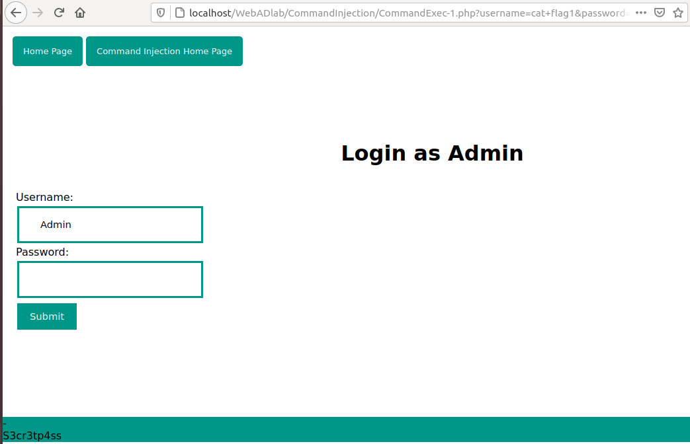

COMMAND EXECUTION
According to the OWASP Top 10 list 2017, Injection attacks are the ranked at number 1 due to the impact of these attacks. In simple words, Injection attacks are a type of attacks where a malicious actor injects specially crafted input which allows them to execute system commands on a system via a vulnerable application. Injection attacks range from SQL injection, Command Injection, LDAP injection, etc.
Consider the following code:
int main(char* argc, char** argv)
{
char cmd[50] = "/usr/bin/cat ";
strcat(cmd, argv[1]);
system(cmd);
return 0;
}
Here, an array cmd contains a string "/usr/bin/cat" which is commonly used in unix systems to print out contents of a file. Then the strcat function appends the first argument passed to the program to the string. Finally the system function executes the command "cat" along with the argument given.

A malicious actor can pass specially crafted input which can circumvent the flow of code and execute arbitrary commands on the system. For example, here we can pass a "; < arbitrary command here>" along with the filename which terminates the first command and starts a new command.
As we can see that after the first command is done executing, whoami command gets executed and we have successfully completed our command injection demo.
Level 1:
In this level, we are presented with a login portal where we can input the correct password to pass the level. One way is to look at the source code and see the password there, but it won't be counted as solution because we will learn nothing. Hence, we should go the intented way.
As this is the easiest level, The username has a default value "Admin" and we need a password. We can simply try to pass a command in password field but we get no output. :(
Closly inspect the url as we click the submit button. We can see the parameters being passed to the backend.
Being curious, we can try to alter the username parameter here.
And we get execution of our command "id". :))
And now we can list all the files in the folder, read the flag1 file for the password and successfully complete the level.

Now let us look at the problem here. This application uses unsafe PHP method shell_exec() at line 20.
There are a couple of unsafe php methods and functions which should be used with great care. For all functions see here [https://gist.github.com/mccabe615/b0907514d34b2de088c4996933ea1720].
shell_exec() executes whatever command is passed to the function. Here the function takes a parameter "username" with GET HTTP method and passes it to shell_exec(). This is not a practical way to use this function and should be used responsibly.
Level 2:
In this level, we are presented with a whois domain lookup page. We can input a domain name and get the whois info.
We can pass a command in place of domain name but we don't get any command execution :(
If we take a step back and try to imagine what the backend code would look like, the developer must have implemented "whois" command concated with the arguments we provide like "whois" + .
As we saw in the introduction of command injection attack, we can try to inject a semi-colon and end the whois command. Then we can issue our own commands.
Yes. We successfully get a command execution. Now let us see the vulnerable part.
On line 19, we can see that the backend implements a "system()" function, which as we have seen earlier is not a great idea to implement irresponsibly.
We can fix this by implementing a blacklist to filter special characters like the semicolon, pipe, etc to safegaurd the application.
Level 3:
In this level, the developer has implemented a blacklist and filtered semi-colon and a few other characters. But as a novice developer, he only filtered common characters and not all of them. Let's have a look at the source code:
The developer has substituted semicolon and other characters with an empty string. Therefore we can not inject code as we cannot terminate the command and inject our own. Or can we ;)
There are different characters which allow us to write one-liner command. This means we can write commands one after the another in a single line. One of the character being "&&". This simply means a boolean AND. It waits for the command on the left to finish executing and then executes the command to the right. For example:
ls && cat test will list all the files and then print the contents of test file.
Similarly, we can inject our code in this level with "&&" symbol.
We have successfully injected our command and completed this level.
Level 4:
In this level, developer has implemented a blacklist which filters out special characters which was discussed in previous level. We have the same portal where we provide a domain name and get the whois result. But closer inspection shows a loophole in the blacklist implemented. Let us see the source code.
On line 20, we see the "&" symbol that is blacklisted. But on closer inspection, we can see that a space character is also included. Because in normal usage, after the "&" symbol in linux and unix systems, users generally use a space, the developer here made a mistake while implementing the blacklist.
Hence, if we supply "&id" or any command without the space character along with &, we get successful code execution.